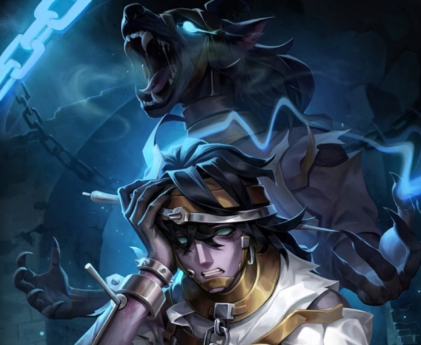
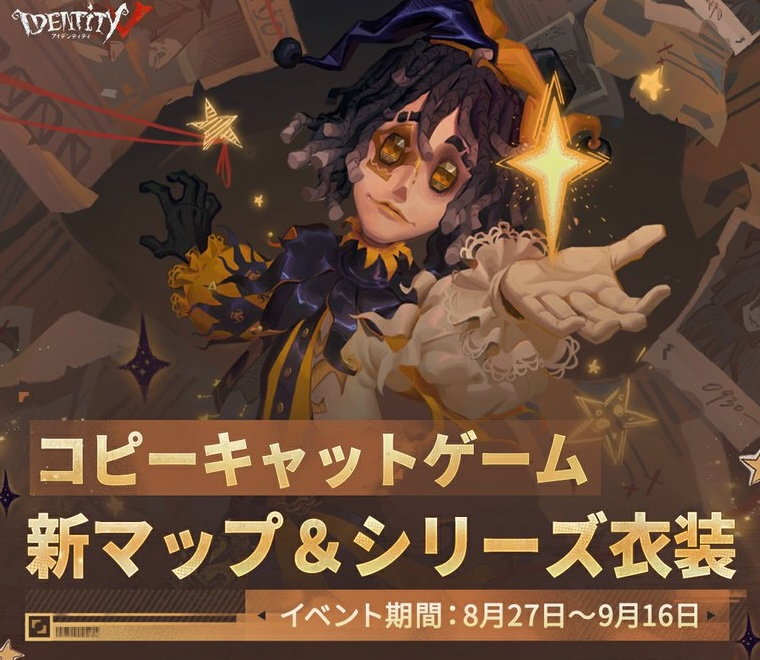
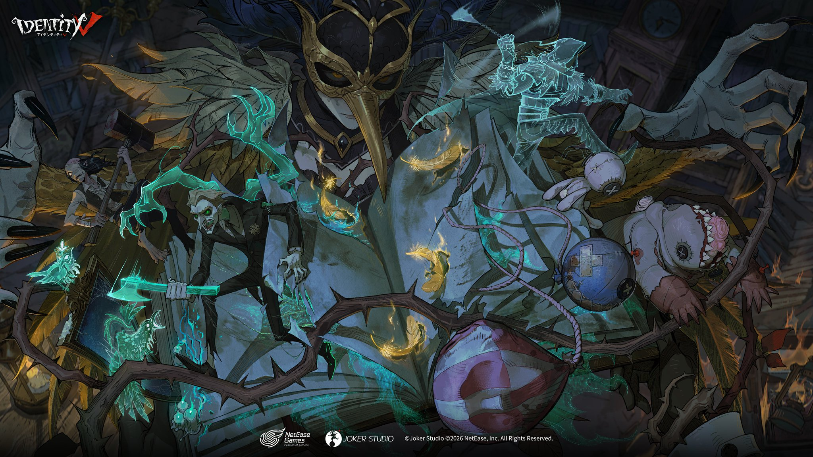
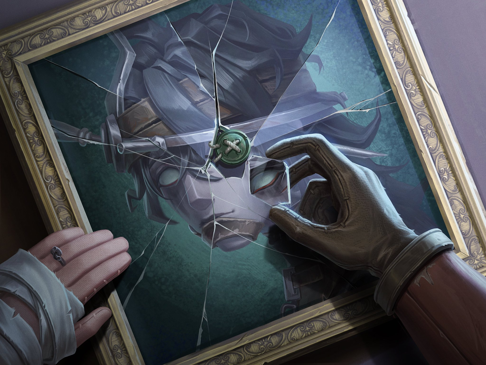

IdentityV（第五人格）の2026年7月に実施されたアップデート・イベント・キャラ調整のまとめです。
2026.8.27現在

「心の獣」がランク戦に追加！バランス調整も実施！
ついに「心の獣」がランク戦モードに登場！追襲の移動速度・命中判定幅の下方修正、クールタイムを14秒から15秒に延長など複数の調整が実施されました。
キャラクター詳細はこちら
へむへむの一言
ランク戦についに登場してしまった。少し下方しているのは本当にありがたい

コピーキャットゲームに新マップ「悪名高い荘園」が登場！
昼夜変化システム・ロッカー・模倣者の密書・吊り下げライトなど新要素が盛りだくさん！夜間に演繹要求を達成すると演繹数報酬が2倍になる新システムも導入！
突発事件「仮面カーニバル」「パーティードリンク」も追加され、より複雑な心理戦が楽しめます！
イベント期間中にタスクを達成すると落書きなどを無料獲得！688エコーで【SSR衣装】泣きピエロ-翻弄される愚行を即時解放できます！
イベント期間：2026年8月27日メンテナンス後〜2026年9月16日23時59分
へむへむの一言
コピーキャットの久しぶりのアップデート！早くだましたい！
2026.8.20現在

Identity V×敦煌壁画「九色鹿」コラボイベント開催！
伝説の九色鹿が敦煌壁画から現世に降り立った！ログイン・対戦タスク・壁画パズルに参加して【アイコン】【アイコン枠】【落書き】【特殊アクション】などの豪華ボーナスを獲得しよう！
【UR衣装】祭司-九色鹿を含むコラボパックが31%オフの2688エコーで登場！単品は2888エコーで購入可能！
イベント期間：2026年8月20日メンテナンス後〜2026年9月20日23時59分
コラボ情報の詳細はこちら
へむへむの一言
コラボ祭司の衣装がかわいい、この頃祭司使いたいと思ってたからこれを機に練習しよう。

「手記の加筆」に悪夢難易度・新異象・新職業が追加！
マップ【災いの女】に待望の悪夢難易度が実装！ボス「災いの女」をはじめ、拾遺の人形・読者の憶測・傾いた本棚・読者の審査など新異象が多数登場します。
新職業【英雄】も追加！突進スキル「斬道」と攻撃力強化パッシブ「淬鋒」で異象を圧倒しよう！
新詞章（SR・SSR・UR）や新アイテム「過去の反響」も追加。新サブタスク『災いの女・二』『災いの女・三』も開放されます！
新システム【暗喩集録】も実装。ボス挑戦の実績を累計してS0シーズン暗喩レベルを上げると、新家具【救済の暗喩】なども獲得できます！
手記の加筆の詳細はこちら
へむへむの一言
手記の加筆の追加がボス戦みたいで楽しみ！タスクで無傷で倒すっていうタスクがあったような、、、絶望かも
2026.8.13現在
シーズン真髄 S43・真髄3が開放！
【UR衣装】「心の獣」-フェニアン、【SSR衣装】調香師-シナン、【SSR衣装】作曲家-ウアイスネが新たに追加されます！
抽選80/130回達成で対応アイコンを1つ選択、180回達成で【アイコン】「心の獣」-フェニアンを獲得できます。
へむへむの一言
URを当ててみんなより早く心の獣で大暴れしてください！

新ハンター「心の獣」エミールがマルチモードで使用可能になりました！
板・窓を割らずに乗り越えるという驚異的な性能を持つ新ハンターが登場！
キャラクター詳細はこちら
へむへむの一言
新ハンターが登場、今回も安定のぶっ壊れ性能！板窓割らずに乗り越えてくる激やば。ホラゲー感が増したハンター
2026.8.7現在

「手記の加筆」にハンターモードが実装！
ついにハンターとして物語に潜入できるようになりました！マップ内に出現する「配役サバイバー」を撃破して詞章を奪い取ろう！基礎体力・移動速度が強化された状態で探索できます。
職業選択は不要で、さまざまなキャラのスキルを装備して使用可能！補助スキル（強襲・追尾・顕影）も新たに追加されました。
現在使用可能なハンターは復讐者・道化師・断罪狩人・リッパー・結魂者・芸者・黄衣の王・白黒無常・写真家・狂眼・夢の魔女・泣き虫・魔トカゲ・血の女王の14人！
無料プレイ回数は週7回（毎週月曜0時リセット）。【災いの女・一】「血の夜の始まり」タスクを完了するとモードが解放されます。
手記の加筆の詳細はこちら
へむへむの一言
ハンターでプレイすることで今まで怖かった異象たちをコテンパンにやっつけたいと思います！